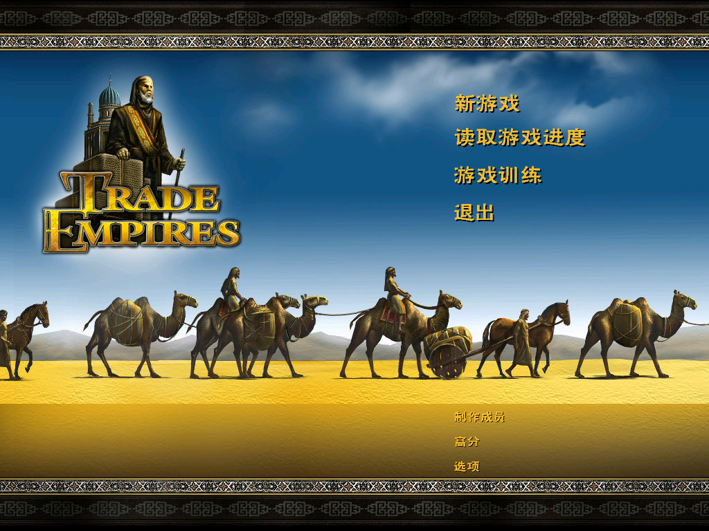
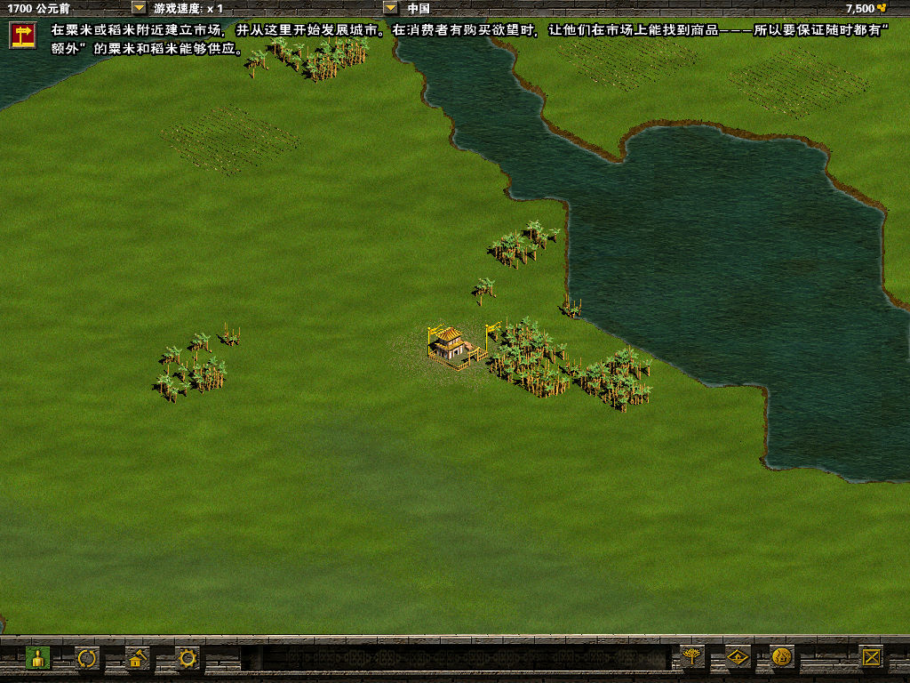

名稱：貿易帝國 (Trade Empires，簡中／英文版) 簡介：Frog City 2001年出品的商業經營模擬遊戲，由Eidos代理發行，2002年由世紀雷神簡 中化並代理發行 [待補]。   保護：無 備註：VirtualBox需搭配WineD3D，但遊戲反應會較慢，虛擬機建議使用VMware。 備註：簡中版安裝時，務必選取簡中語系，不可選擇英文語系，否則會安裝錯誤。 備註：簡中版需在簡中系統上執行，否則會亂碼。

